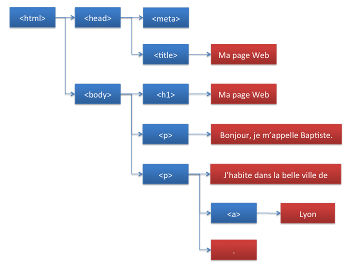

Le JavaScript
/!\ camelCase : unExempleDeCamelCase /!\
- let : déclaration de variables
- const : déclaration de constante
- number : type pour entiers, décimals, négatifs. /!\ Les virgules sont à éviter pour les calculs (mieux vaut des centimes que des euros) /!\
- boolean : type ayant pour valeur true or false
- string : type pour texte. seul le + correspondant à la concaténation fonctionne. " " : espace
- types de données primitives JS : null, undefined, symbol.
- classes (objet) : fontionne comme une variable mais sa valeur est entre {}. Dans les {} on insère "clé1: valeur1, clé2: valeur2, etc...". Pour accéder à ces valeurs on tape "class.key".
Pour créer une classe on utilise
javascript1class NomClasse {Pour créer une instance on utilise "new" :
2constructor(arg1, arg2, arg3){
3 this.arg1 = arg1;
4 this.arg2 = arg2;
5 this.arg3 = arg3; }
6}
let nomInstance = new NomClasse("arg1, arg2, arg3) ; - array (tableaux): fonctionne comme une variable avec sa valeur entre []. Dans les [ on insère "value1, value2, value3, value4, etc..."];. Un array est une liste ordonnée donc chaque valeur a son index, allant de 0 à x.
Pour appeler une valeur on tape nomArray[index]. Déclarable en tant que constante.
On peut placer des variables dans un array.
Manipuler un tableau : nomArray.length; , nomArray.push("string"); - pour ajouter à la fin, nomArray.unshift("string"); - pour ajouter au début, nomArray.pop(); - pour supprimer le dernier.
Un "set" ou ensemble, est une liste non ordonnée. Les "map" sont comme un array, fonctionnent sur le principe d'une liste ordonnée avec clé-valeur à la différence qu'elles ne se limitent pas aux strings et peuvent être manipulées.
Le JavaScript pour le web
Le DOM
Le DOM corresponds à l'arbre de notre fichier comme suit :

Dans notre DOM, en associant une constante, on va pouvoir rechercher des éléments en accédant à la racine du DOM. On utilisera la variable document qui correspond à l'élement <html>.
if (document.body.nodeType === document.ELEMENT_NODE) {
console.log("Body est un noeud élément");
} else { // (soit document.TEXT_NODE))
console.log("Body est un noeud textuel");
}
document.body.childNodes[0] donne accès au premier enfant du noeud body.
Les espaces entre les balises ainsi que les retours à la ligne dans le code HTML sont considérés par le navigateur comme des nœuds textuels.
- Par id avec document.getElementById(""), c'est une méthode précise car il n'existe qu'un élément par id
- Par class avec document.getElementsByClassName("") qui nous sortira une liste des éléments de la classe, on peut ajuster la recherche à l'aide d'index
- Par tag avec document.getElementsByTagName(""). On obitendra une liste également
- Par sélecteur avec document.querySelector("") - document.querySelectorAll("") qui fonctionne de manière plus complexe, par exemple : document.querySelector("#myId p.article > a") ira chercher dans l'élément ayant pour id #myId , les éléments de type <p> qui ont pour classe article, afin de récupérer le lien <a> qui est un enfant direct (pas des enfants de ses enfants). Il renverra le 1er résultat ou null si aucun élément n'est trouvé
- Pour children : element.children nous retourne la liste des enfants de cet élément
- Pour parents : element.parentElement retourne l'élément parent de celui-ci
- Pour ce qui l'entoure : element.nextElementSibling / element.previousElementSibling permet de naviguer vers l'élément suivant / précédent de même niveau
var titresElts = document.getElementsByTagName("h2"); // Tous les titres h2
console.log(titresElts[0]); // Affiche le premier titre h2
console.log(titresElts.length); // Affiche 3
On peut afficher une liste d'éléments :
// Tous les éléments ayant la classe "merveilles"
var merveillesElts = document.getElementsByClassName("merveilles");
for (var i = 0; i < merveillesElts.length; i++) {
console.log(merveillesElts[i]);
} // Affiche les noeuds enfant du noeud body
for (var i = 0; i < document.body.childNodes.length; i++) {
console.log(document.body.childNodes[i]);
}
var h1 = document.body.childNodes[1];
console.log(h1.parentNode); // Affiche le noeud body
console.log(document.parentNode); // Affiche null : document n'a aucun noeud parent
Il existe d'autres propriétés pour naviguer entre les objets du DOM.
Le nom de la variabletitresEltsstockant la liste des titres se termine parElts, abréviation de "éléments". Cela permet d'indiquer que le contenu de cette variable correspond à des éléments du DOM, et non à de simples valeurs. Il s'agit d'une bonne pratique que nous allons adopter pour toute la suite de ce cours. Une variable stockant un seul élément du DOM sera suffixée parElt, abréviation de "élément".
Modifier le DOM
Modifier le contenu d'un élément
Définir une valeur à innerHTML ou textContent remplace directement le contenu actuel de l'élément par celui que vous précisez.
// Modification du contenu HTML de la liste : ajout d'un langage
document.getElementById("langages").innerHTML += '<li id="c">C</li>';
Il est souvent utilisé pour "vider" un élément de son contenu : document.getElementById("langages").innerHTML = "";
Modifier les classes
La propriété classList permet d'accéder direcement à la liste des classes d'un élément et permet les fonctions suivantes :
- add(<string>, [<string>, ...] ) : ajoute la ou les classes spécifiées
- remove(<string>, [<string>, ...] ) : supprime la ou les classes spécifiées
- contains(<string> ) : vérifie si la classe spécifiée est contenue par cet élément
- replace(<old>, <new> ) : remplace l'ancienne classe par la nouvelle classe
Changer les styles d'un élément
elt.style.color = "#fff" change la couleur du texte de l'élément à blanche. elt.style.backgroundColor = "#000" change la couleur de fond de l'élément en noir. elt.style.fontWeight = "bold" met le texte de l'élément en gras.
Modifier les attributs
Voici quelques exemples avec elt faisant référence à un élément de type input :
- elt.setAttribute("type", "password") change le type de l'input en un type password
- elt.setAttribute("name", "my-password") change le nom de l'input en my-password
- elt.getAttribute("name") retourne my-password
document.querySelector("h1").setAttribute("id", "titre");
document.querySelector("h1").id = "titre";
On peut utiliser les fonctions getAttribute et removeAttribute.
// L'identifiant de la première liste
console.log(document.querySelector("ul").id);
// L'attribut href du premier lien
console.log(document.querySelector("a").href);
Créer de nouveaux éléments
document.createElement(<tag>) prend en paramètre le nom de la balise de notre élément et nous renvoie l'élément nouvellement créé.
Exemple : const newElt = document.createElement("div").
Un élément créé avec cette fonction ne fait pas encore partie du document, vous ne le verrez donc pas sur votre page. Pour le voir, il va d'abord falloir l'ajouter en tant qu'enfant à un élément.
Ajouter des enfants
parentNode.appendChild(<element>) prend en paramètre l'élément à ajouter en tant qu'enfant. L'élément depuis lequel on appelle cette fonction devient donc le parent de notre élément.
Exemple :
const newElt = document.createElement("div");
let elt = document.getElementById("main");
elt.appendChild(newElt);
var pythonElt = document.createElement("li"); // Création d'un élément li
pythonElt.id = "python"; // Définition de son identifiant
pythonElt.textContent = "Python"; // Définition de son contenu textuel
document.getElementById("langages").appendChild(pythonElt); // Insertion du nouvel élément
Dans l'exemple précédent, nous avons défini le contenu textuel du nouvel élément à l'aide de la propriététextContent. Il est possible d'aboutir au même résultat en ajoutant au nouvel élément un noeud
fils de type texte. Pour cela, on utilise la méthodecreateTextNodequi, comme son nom l'indique, crée un nouveau noeud de type texte. Ensuite, on ajoute le noeud texte à l'élément avecappendChild.
var rubyElt = document.createElement("li"); // Création d'un élément li
rubyElt.id = "ruby"; // Définition de son identifiant
rubyElt.appendChild(document.createTextNode("Ruby")); // Définition de son contenu textuel
document.getElementById("langages").appendChild(rubyElt); // Insertion du nouvel élément
Ajout d'un noeud avant un noeud
var perlElt = document.createElement("li"); // Création d'un élément li
perlElt.id = "perl"; // Définition de son identifiant
perlElt.textContent = "Perl"; // Définition de son contenu textuel
// Ajout du nouvel élément avant l'identifiant identifié par "php"
document.getElementById("langages").insertBefore(perlElt, document.getElementById("php"));
// Ajout d'un élément au tout début de la liste
document.getElementById('langages').insertAdjacentHTML("afterBegin",
'<li id="javascript">JavaScript</li>');
Choix de la position exacte du nouveau noeud
- beforebegin : avant l'élément existant lui-même
- afterbegin : juste à l'intérieur de l'élément existant, avant son premier enfant
- beforeend : juste à l'intérieur de l'élément existant, après son dernier enfant
- afterend : après l'élément existant lui-même
Supprimer et remplacer des éléments
elt.removeChild(newElt) supprime l'élément newElt de l'élément elt.
elt.replaceChild(document.createElement("article"), newElt) remplace l'élément newElt par un nouvel élément de type article.
Trouver des éléments
if (document.getElementById("antiques").classList.contains("merveille")) {
console.log("L'élément identifié par antiques possède la classe merveille");
} else {
console.log("L'élément identifié par antiques ne possède pas la classe merveille");
}
Modifier le style d'un élément
Certaines propriétés CSS s'écrivent sous la forme d'un nom composé. Pour utiliser ces propriétés en JavaScript, il faut supprimer le tiret et écrire la première lettre du mot suivant en majuscule.
La propriété style
Les éléments du DOM disposent d'une propriété nommée style qui renvoie un objet représentant l'attribut style de l'élément. Les propriétés de cet objet correspondent aux propriétés CSS de l'élément.
var pElt = document.querySelector("p");
pElt.style.color = "red";
pElt.style.margin = "50px";
Un style définit dans la feuille css n'est pas récupérable en JavaScript via la propriété style.
La fonction getComputedStyle
Elle prend en paramètre un noeud du DOM et renvoie un objet représentant son style. On peut ensuite consulter les différentes propriétés CSS de cet objet.
Les formulaires
Gestion de focus
// Affichage d'un message contextuel pour la saisie du pseudo
pseudoElt.addEventListener("focus", function () {
document.getElementById("aidePseudo").textContent = "Entrez votre pseudo";
});
// Suppression du message contextuel pour la saisie du pseudo
pseudoElt.addEventListener("blur", function (e) {
document.getElementById("aidePseudo").textContent = "";
});
Depuis le code JavaScript, on peut modifier la cible de saisie en appelant les méthodesfocus(pour donner le focus) etblur(pour l'enlever) sur un élément du DOM.
// Focus sur la zone de saisie du pseudo
pseudoElt.focus();
Les éléments d'options
Ecouter les évènements
Element est la classe de base la plus générale à partir de laquelle tous les objets d'un Document héritent.
Les programmes JavaScript que nous avons écrits jusqu'ici s'exécutaient automatiquement dès leur chargement par la page web. L'ordre d'exécution des instructions était déterminé à l'avance et les interactions avec l'utilisateur se limitaient à la saisie de valeurs au moyen de l'instruction prompt.
- Evènement
- Un événement est une réaction à une action émise par l'utilisateur, comme le clic sur un bouton ou la saisie d'un texte dans un formulaire.
En JavaScript, il est représenté par un nom ( click , mousemove ...) et une fonction que l'on nomme une callback . Un événement est par défaut propagé, c'est-à-dire que si nous n'indiquons pas à l'événement que nous le traitons, il sera transmis à l'élément parent, et ainsi de suite jusqu'à l'élément racine
Réagir lors d'un clic
La fonction addEventListener() permet d'écouter tous types d'événements.
addEventListener(<event>, <callback>) prend en paramètres le nom de l'événement à écouter et la fonction à appeler dès que l'événement est exécuté.
On pourra se référer à la liste des évènements.
// Ajout d'un gestionnaire qui affiche le type et la cible de l'événement
document.getElementById("bouton").addEventListener("click", function (e) {
console.log("Evènement : " + e.type +
", texte de la cible : " + e.target.textContent);
});
- addEventListener()
- const elt = document.getElementById('mon-lien');.....On récupère l'élément sur lequel on veut détecter le clic
elt.addEventListener('click', function() {.....................On écoute l'événement click
elt.innerHTML = "C'est cliqué !";................................On change le contenu de notre élément pour afficher "C'est cliqué !"
}); - preventDefault()
- Si il s'agit d'un lien, et dès que l'on clique sur un lien, le navigateur nous redirige sur la page vers laquelle il pointe, c'est le comportement par défault.
const elt = document.getElementById('mon-lien');......Récupération de l'élément sur lequel on veut détecter le clic
elt.addEventListener('click', function(event) {.............Ecoute de l'événement click, notre callback prend un paramètre que nous avons appelé event ici
event.preventDefault();.................................................La fonction preventDefault empêche le comportement par défaut lors du clic
}); - stopPropagation()
- Fonction de l'objet que votre fonction reçoit en paramètre. Son rôle est par contre très différent, car il nous permet d'empêcher la propagation de l'événement vers son parent.
Admettons par exemple que nous ayons un élément pour lequel nous voulons afficher un message lorsque l'on clique dessus. Mais à l'intérieur de cet élément, nous avons aussi un autre élément qui doit nous afficher un autre message lorsque l'on clique dessus. Par défaut, si nous cliquons dans l'élément intérieur, le message va s'afficher, puis notre élément parent va lui aussi recevoir l'événement du clic et encore changer le message. Pour éviter cela, nous devons stopper la propagation de l'événement.
elementInterieur.addEventListener('click', function(event) {
event.stopPropagation();
elementAvecMessage.innerHTML = "Message de l'élément intérieur";
});
Réagir au clavier
// Gestion de l'appui sur une touche du clavier produisant un caractère
document.addEventListener("keypress", function (e) {
console.log("Vous avez appuyé sur la touche " + String.fromCharCode(e.charCode));
});
Pour gérer l'appui et le relâchement sur n'importe quelle touche du clavier (pas seulement celles qui produisent des caractères), on utilise les événements keydown et keyup.
Fin du chargement de la page web
// Gestion de la fin du chargement de la page web
window.addEventListener("load", function () {
console.log("Page entièrement chargée");
});
Fermeture de la page web
// Gestion de la fermeture de la page web
window.addEventListener("beforeunload", function (e) {
var message = "On est bien ici !";
e.returnValue = message; // Provoque une demande de confirmation (standard)
return message; // Provoque une demande de confirmation (certains navigateurs)
});
Récupérer des données utilisateur
En plus de ces deux dernières propriétés, on peut retrouver ici ce que propose l'interface event.
Détecter les mouvements de souris
En écoutant l'event mousemove, on obtient l'objet de type MouseEvent qui contient :
- clientX / clientY : position de la souris dans les coordonnées locales (contenu du DOM)
- offsetX / offsetY : position de la souris par rapport à l'élément sur lequel on écoute l'événement
- pageX / pageY : position de la souris par rapport au document entier
- screenX / screenY : position de la souris par rapport à la fenêtre du navigateur
- movementX / movementY : position de la souris par rapport à la position de la souris lors du dernier événement mousemove
- elt.addEventListener('mousemove', function(event) {
- const x = event.offsetX; // Coordonnée X de la souris dans l'élément
const y = event.offsetY; // Coordonnée Y de la souris dans l'élément
});
Lire le contenu d'un champ de texte
- change :
- const selectElement = document.querySelector('.ice-cream');
selectElement.addEventListener('change', (event) => {
const result = document.querySelector('.result');
result.textContent = `You like ${event.target.value}`;
});
input :- input.addEventListener('input', function(event) {
- output.innerHTML = event.target.value;
});
Un service web
Chaque requête requiert un langage et un protocole de communication différent.
- SMTP - Simple Mail Transfer Protocol
- Protocole pour l'envoi de mail
- IMAP - Internet Message Access Protocol
- Protocole pour la réception de mail
- HTTP - HyperText Transfer Protocol
- Protocole lié à des ressources web. Il permet de charger les pages HTML, CSS, polices, images, ... Il permet également d'envoyer/récupérer des formulaires et des données.
- FTP - File Transfer Protocol
- Protocole lié aux transferts de fichiers
Les codes HTTP
Si le service web ne comprend pas la requête, il peut renvoyer à un code :
- Les codes de 100 à 199 sont des codes d'information, plutôt techniques et peu utilisés en pratique
- Les codes de 200 à 299 sont des codes de succès. Ils veulent dire que votre requête s'est bien déroulée et vous apporteront une information sur le type de résultat que vous recevez
- Les codes de 300 à 399 sont les codes de redirection. Ils indiquent généralement que le contenu que vous recherchez a bougé ou n'est pas accessible directement
- Les codes de 400 à 499 sont des codes d'erreur liés à l'utilisation du service web (ressource inexistante, authentification requise, pas les bonnes permissions, requête mal construite, etc). Ce sont des erreurs que l'on retrouve fréquemment dans la pratique et pour lesquelles il est bon d'avoir une stratégie de résolution
- Les codes de 500 à 599 sont des codes d'erreur venant du service web (plantage du service, service ne répondant plus, manque de mémoire, etc.). En tant qu'utilisateur du service, vous ne pouvez pas y faire grand-chose, mais de la même manière que pour les erreurs 4xx, il est bon d'avoir une stratégie de résolution
- Les principaux codes sont :
- 200 : indique que tout s'est bien passé
- 201 : indique que tout s'est bien passé et qu'une nouvelle ressource a bien été créée
- 204 : indique que tout s'est bien passé mais qu'aucun résultat n'est renvoyé
- 400 : indique qu'une requête est erronée
- 401 : indique que l'utilisateur n'est pas authentifié, alors que c'est nécessaire
- 403 : indique que l'utilisateur n'a pas le droit d'accéder à cette ressource
- 404 : indique que la ressource demandée n'existe pas
- 500 : indique que le serveur a subi une erreur interne
Les métohdes HTTP
Les méthodes HTTP permettent d'identifier le type de requête que vous souhaitez faire. Voici les principales :
- GET : permet de récupérer des ressources, comme par exemple le temps actuel sur un service de météo
- POST : permet de créer ou modifier une ressource, comme la création d'un nouvel utilisateur sur votre application
- PUT : permet de modifier une ressource, comme le nom de l'utilisateur que vous venez de créer avec POST
- DELETE : Permet de supprimer une ressource, comme un commentaire dans un fil de discussion
Les API
- API - Application Programming Interface
- Interface mettant à disposition des points d'accès vers les ressources de l'application
Récupérer des données d'un service web
AJAX
- AJAX - Asynchronous JavaScript And XML
- Ensemble d'objets et de fonctions mis à disposition par le langage JavaScript, afin d'exécuter des requêtes HTTP de manière asynchrone
On pourra avoir un site plus réactif et améliorer l'expérience utilisateur avec du nouveau contenu qui se charge au fur et à mesure qu'on le découvre, par exemple.
var request = new XMLHttpRequest();
request.open("GET", "http://url-service-web.com/api/users");
request.send();
Ce code nous permet d'envoyer une requête HTTP de type GET au service web se trouvant à l'adresse http://url-service-web.com/api/users .
Récupérer les données au format JSON
Il faut maintenant récupérer et interpréter notre résultat.
- JSON - JavaScript Object Notation
- Format textuel (contrairement à un format binaire plus léger mais impossible à lire à l'œil humain), se rapprochant en termes de syntaxe de celui des objets dans le langage JavaScript
Valider les données saisies utilisateur
Ne faites jamais confiance aux données saisies par vos utilisateurs !
Certains de vos utilisateurs peuvent être malveillants ou ils peuvent ne pas bien comprendre ce que vous souhaitez qu'ils fassent.
Ainsi, pour vérifier qu'une saisie commence par Hello, on code :
myInput.addEventListener('input', function(e) {
var value = e.target.value;
if (value.startsWith('Hello ')) {
isValid = true;
} else {
isValid = false;
}
});
Regex
Si l'on veut savoir si notre texte commence par la lettre e et est suivi d'au moins 3 chiffres, on écrira la regex suivante :
function isValid(value) {
return /^e[0-9]{3,}$/.test(value);
}
> Regex
Il est aussi possible depuis HTML5 d'utiliser les contraintes HTML pour cibler un type de saisie. > Doc !
Sauvegardez des données sur le service web
La requête POST
var request = new XMLHttpRequest();
request.open("POST", "http://url-service-web.com/api/users");
request.setRequestHeader("Content-Type", "application/json");
request.send(JSON.stringify(value));
L'asynchrone en JS
JavaScript est synchrone et mono-thread : lorsqu'on écrit du code, chaque ligne sera exécutée l'une après l'autre en attendant la fin de l'exécution de la ligne précédente.
du code asynchrone va s'exécuter ligne après ligne, mais la ligne suivante n'attendra pas que la ligne asynchrone ait fini son exécution.
L'event loop
- setTimout
- Fonction la plus répandue pour exécuter du code asynchrone sans bloquer le fil d'exécution en cours.
Elle prend 2 paramètres :- La fonction à exécuter de manière asynchrone (qui sera donc ajoutée à la file d'attente de l'event loop)
- Le délai, en millisecondes, avant d'exécuter cette fonction
console.log("I'm here!")
}, 5000);
console.log("Where are you?");
"I'm here!" s'affichera donc 5 sec après.
On peut passer l'identifiant que nous renvoie setTimeout en paramètre à la fonction clearTimeout pour annuler l'exécution asynchrone de la fonction avant qu'elle ne soit exécutée.
On notra quand même 2 fonctions peu utilisées :
- setInterval : elle fonctionne exactement comme setTimeout , à ceci près qu'elle exécute la fonction passée en paramètre en boucle à une fréquence déterminée par le temps en millisecondes passé en second paramètre. Il suffira de passer la valeur de retour de setInterval à clearInterval pour stopper l'exécution en boucle de la fonction
- setImmediate : cette fonction prend en seul paramètre la fonction à exécuter de façon synchrone. La fonction en question sera placée dans la file d'attente de l'event loop, mais va passer devant toutes les autres fonctions, sauf certaines spécifiques au Javascript : les événements (les mêmes qu'on a vus au premier chapitre, et qui sont donc exécutés de façon asynchrone 😉), le rendu, et l'I/O. Il existe aussi nextTick , qui permet, là, de court-circuiter tout le monde. À utiliser avec précaution, donc...
Le cas de l'I/O
- I/O
- correspond aux événements liés à l'input(les flux d'entrée) et l'output(les flux de sortie). Cela correspond notamment à la lecture/écriture des fichiers, aux requêtes HTTP, etc
Callbacks
La fonction qui est envoyée à addEventListener est une callback. Elle n'est pas appelée tout de suite, elle est appelée plus tard, dès que l'utilisateur déclanche l'élément. Ça ne bloque donc pas l'exécution du code et c'est donc asynchrone.
Par exemple, lorsque nous définissions une fonction dans la propriété onreadystatechange, nous étions en train de lui définir une callback. De la même manière, la fonction que nous passons en paramètre à setTimeout est une callback.
Gérer les erreurs
Pour gérer les erreurs avec les callbacks, la méthode la plus utilisée est de prendre 2 paramètres dans notre callback. Le 2e paramètre est notre donnée et le 1er est l'erreur. Si elle n'est pas null ou undefined, elle contiendra un message d'erreur indiquant qu'une erreur est intervenue.
fs.readFile(filePath, function(err, data) {
if (err) {
throw err;
}
// Do something with data
});
Promises
- Promise - promesse
- Lorsque l'on exécute du code asynchrone, celui-ci va immédiatement nous retourner une "promesse" qu'un résultat nous sera envoyé prochainement.
Cette promesse est en fait un objet Promise qui peut être resolve avec un résultat, ou reject avec une erreur.
Lorsque l'on récupère une Promise , on peut utiliser sa fonction then() pour exécuter du code dès que la promesse est résolue, et sa fonction catch() pour exécuter du code dès qu'une erreur est survenue.
.then(function(data) {
// Do somthing with data
})
.catch(function(err) {
// Do something with error
});
Le chaînage : returnAPromiseWithNumber2()
.then(function(data) { // Data is 2
return data + 1;
})
.then(function(data) { // Data is 3
throw new Error('error');
})
.then(function(data) {
// Not executed
})
.catch(function(err) {
return 5;
})
.then(function(data) { // Data is 5
// Do something
});
Async/await
async function fonctionAsynchrone1() {/* code asynchrone */}
async function fonctionAsynchrone2() {/* code asynchrone */}
async function fonctionAsynchrone3() {
const value1 = await fonctionAsynchrone1();
const value2 = await fonctionAsynchrone2();
return value1 + value2;
}
async / await utilisant les Promises, la levée d'une erreur se fait aussi par une exception.
Pour intercepter cette erreur, par contre, il suffit d'exécuter notre code asynchrone dans un bloc try {} catch (e) {} , l'erreur étant envoyée dans le catch.
Paralléliser plusieurs requêtes HTTP
Enchaîner les requêtes
Avec les callbacks
var GETRequestCount = 0;
var GETRequestResults = [];
function onGETRequestDone(err, result) {
if (err) throw err;
GETRequestCount++;
GETRequestResults.push(result);
if (GETRequestCount == 2) {
post(url3, function(err, result) {
if (err) throw err;
// We are done here !
});
}
}
get(url1, onGETRequestDone);
get(url2, onGETRequestDone);
Si on atteint 2 (le nombre de requêtes GET qu'on a faites), alors on va exécuter la requête POST.
GETRequestResults sert à conserver les réponses des requêtes GET , car on ne les a pas toutes les 2 en même temps.
Avec les Promises
Promise.all([get(url1), get(url2)])
.then(function(results) {
return Promise.all([results, post(url3)]];
})
.then(function(allResults) {
// We are done here !
});
Avec async/await
async function requests() {
var getResults = await Promise.all([get(url1), get(url2)]);
var postResult = await post(url3);
return [getResults, postResult];
}
requests().then(function(allResults) {
// We are done here !
});
Optimiser son code
Linter, minifier, bundler, transpiler
- Linter
- Le linter est un programme qui va analyser notre code et détecter les erreurs de syntaxe, les variables non utilisées, les variables qui n'existent pas, la mauvaise organisation du code, le non-respect des bonnes pratiques d'écriture de code.
Voici quelques exemples de linters : JSLint, ESLint. - Minifier
- Le Minifier va essayer de rendre votre code le plus léger possible en retirant les espaces et retours à la ligne inutiles, en renommant vos variables avec des noms plus courts, en supprimant le code non utilisé, en supprimant les commentaires, en optimisant certains bouts de code pour les réécrire avec une syntaxe plus légère, etc...
Voici quelques exemples de minifiers : node-minify, UglifyJS. - Bundler
- Le Bundler va se charger de packager votre code pour qu'il tienne dans un seul fichier.
Voici un exemple de bundler : Webpack. - Transpiler
- Le Transpiler permet de coder avec la dernière version de JavaScript tout en étant compatible avec tous les navigateurs.
Voici un exemple de transpiler : Babel.
Gérer les dépendances
- NPM - gestionnaire de paquets (package manager)
- Programme qui vous permet d'installer très facilement des modules pour le JavaScript, et cela comprend les outils dont nous avons parlé dans les chapitres précédents.
- Module
- Bout de code qui résout une problématique commune à beaucoup de développeurs : comme un parser XML, un générateur d'uuid (des identifiants uniques), un router, un framework de rendu HTML, etc.
Compiler et exécuter son code
- Initialiser avec npm init
- Installation de Webpack avec npm install webpack webpack-cli --save-dev
- Projet de base :
- project
- - package.json
- - index.html
- src
- - index.js
- - query.js
- project